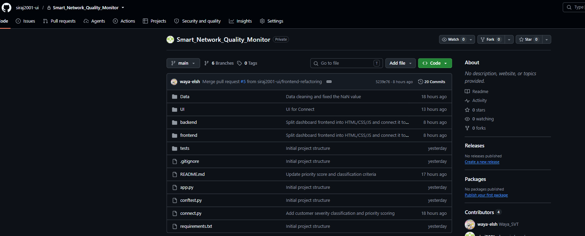
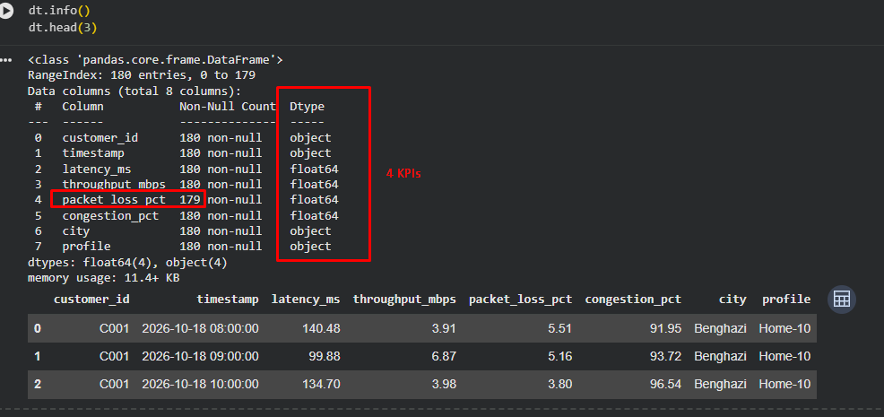
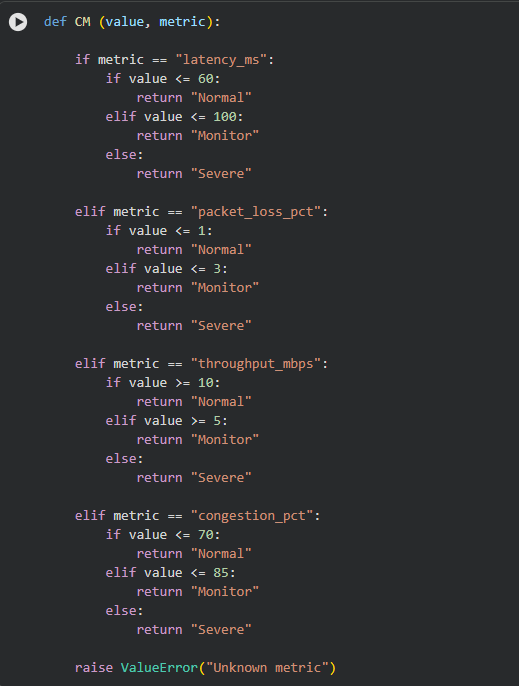
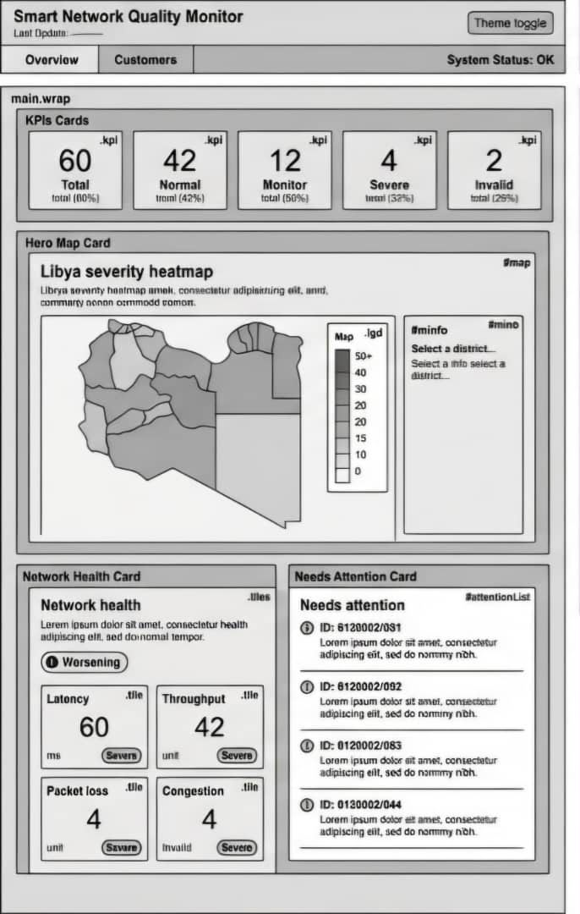
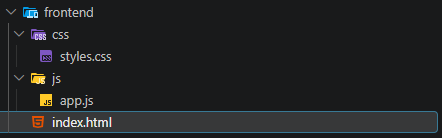
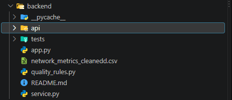

Local prototype · rule-based classification
Smart Network Quality Monitor
An ISP-focused pipeline that cleans customer measurements, classifies the latest reading, explains why, and displays the result in a dashboard backed by a REST API.
CSV → Pandas cleaning → classification → Flask REST API → dashboard
The route
Every good monitor starts with better questions.
The team moved from structure, to evidence, to experience — with each person making the next handoff clearer.

Siraj Aldeen · project management
Give the work a home before it gets complicated.
Siraj created the repository and set the project rhythm. The early win was simple: everyone could see what existed, what was next, and where a decision belonged.
Without a shared structure, data, rules, UI, and backend decisions risked becoming separate islands.
Mohamed Ramadan · data cleaning
Make the data honest enough to listen to.
Mohamed cleaned the network metrics and handled missing values so the system could distinguish a real quality problem from a broken or incomplete reading.
Missing values made the raw dataset inconsistent and could distort any rule built on top of it.


Aya · rules and labels
Turn measurements into a useful answer.
Aya implemented the rules that translate cleaned metrics into labels people can act on. The monitor needed more than numbers; it needed a consistent interpretation.
Users still need to know whether a connection is good, poor, or worth checking.
Aseel · UI/UX
Design the calm inside the noise.
Aseel shaped how the monitor should feel: focused, readable, and clear about what deserves attention first.
A network monitor can overwhelm people when every metric looks equally urgent.


Ayaat · frontend with the UI
Make the idea feel real in the browser.
Ayaat brought the UI into the frontend, connecting the visual decisions to a working monitor that people could actually navigate.
Visual polish, states, and interactions all had to survive in a real interface.
Batool · backend
Give the monitor a reliable pulse.
Batool connected the system behind the screen: endpoints, service logic, and the data flow needed to make the monitor more than a static view.
Frontend states are only as trustworthy as the service that feeds them.

The handoff
A monitor is a team decision, made visible.
One shared repository. Cleaner data. Clearer rules. A calmer interface. A working service. The result is not just a dashboard — it is a chain of trust.
What the CSV revealed
The final snapshot shows a clean dataset with most customers in Normal or Monitor ranges, while the system keeps Severe cases visible for action.